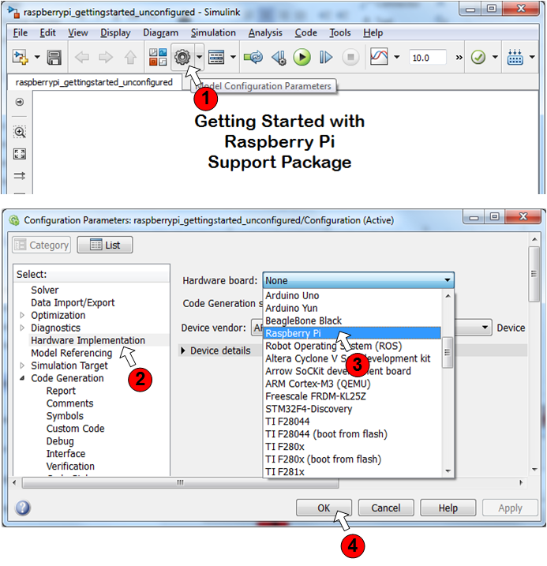
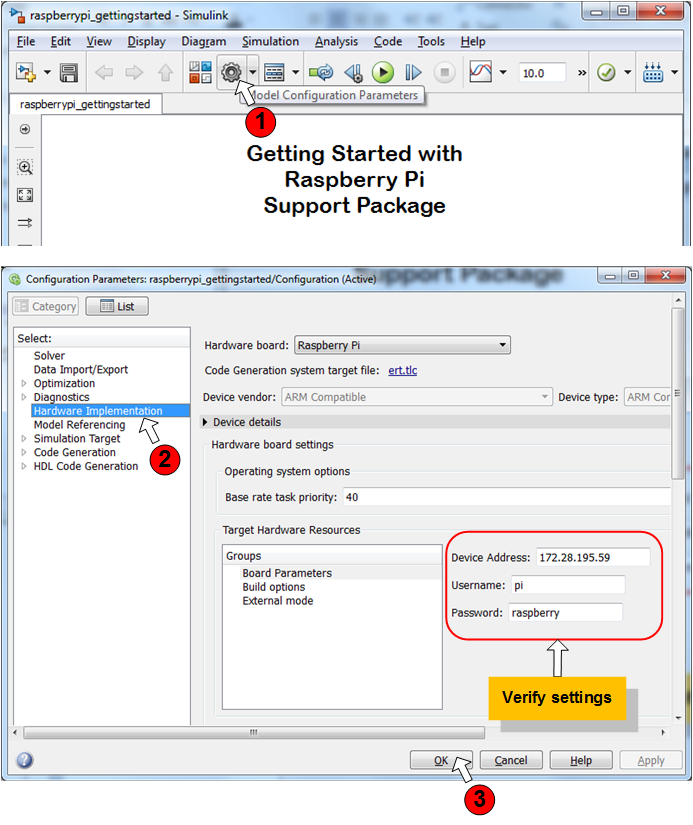
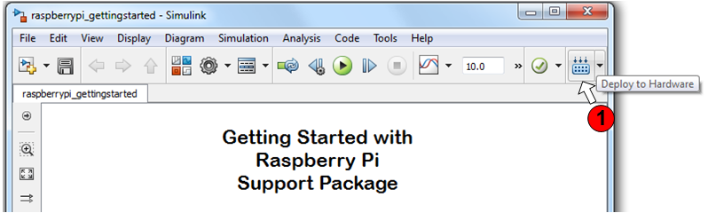

Getting Started with Simulink Support Package for Raspberry Pi Hardware
This example shows you how to use Simulink® Support Package for Raspberry Pi™ Hardware to run a Simulink models on Raspberry Pi hardware.
Contents
Introduction
Simulink Support Package for Raspberry Pi Hardware enables you to create and run Simulink models on Raspberry Pi hardware. The support package includes a library of Simulink blocks for configuring and accessing Raspberry Pi peripherals and communication interfaces.
In this example you will learn how to configure a simple Simulink model to generate code for Raspberry Pi hardware and run the generated code on the board to periodically turn an LED on and off.
Prerequisites
If you are new to Simulink, we recommend completing Interactive Simulink Tutorial, reading the Getting Started section of the Simulink documentation and running Simulink Getting Started example.
Required Hardware
To run this example you need the following hardware:
- Raspberry Pi board
Task 1 - Review Raspberry Pi Block Library
Simulink Support Package for Raspberry Pi Hardware provides an easy way to create algorithms that use Raspberry Pi peripherals by using blocks that can be added to your raspberrypi_ model. The blocks are used to configure the associated sensors and actuators, as well as to read and write data to them.
1. Enter slLibraryBrowser at the MATLAB® prompt. This opens the Simulink Library Browser.
2. In the Simulink Library Browser, navigate to Libraries > Simulink Support Package for Raspberry Pi Hardware. Right-click on the LED block and choose Add block to a new model. You will see a new Simulink model with an LED block.
3. Double-click the LED block. Review the block mask, which contains a description of the block and parameters for configuring the associated user LED. Click on View LED location button to see a diagram of user LEDs on Raspberry Pi hardware.
Task 2 - Configure model for code generation
In this task, you will configure a simple model blinking an on-board LED to run on Raspberry Pi hardware.
1. Open the unconfigured Getting Started with Raspberry Pi Support Package model. In order to configure the model for Raspberry Pi hardware follow the steps shown in the figure below:

For convenience, a Getting Started with Raspberry Pi Support Package model pre-configured to generate code for Raspberry Pi hardware is also available.
2. Verify the connectivity parameters for your Raspberry Pi hardware by following the steps below:

The username and the password shown on the screen shot above shows the default username and password for the Raspbian Linux distribution.
3. Generate code for the model by clicking on the Deploy to Hardware button:

4. The generated code is built on theRaspberry Pi hardware and run automatically. When the model starts running on the Raspberry Pi hardware, observe that the user LED on the board blinks with a period of 1 second.
Task 3 - Stop Simulink model running on Raspberry Pi hardware
Simulink Support Package for Raspberry Pi Hardware generates a Linux executable for each Simulink model you run on the Raspberry Pi hardware. The generated executable is an ELF file that has the same name as the Simulink model and is stored in your home directory on the Raspberry Pi hardware.
1. To run/stop a Simulink model, you use the runModel and stopModel methods of the raspberrypi communication object. First, create a communication object to the Raspberry Pi hardware:
r = raspberrypi;
This command generates a Raspberry Pi object that is your gateway to communicating with your Raspberry Pi hardware from MATLAB command line. Execute the following on the MATLAB command line to see if the raspberrypi_gettingstarted_unconfigured model is running:
isModelRunning(r,'raspberrypi_gettingstarted_unconfigured')
The isModelRunning method of raspberrypi returns true if the model is running on the Raspberry Pi hardware.
2. Execute the following on the MATLAB command line to stop the Simulink model you ran in Task 2:
stopModel(r,'raspberrypi_gettingstarted_unconfigured')
You should see the user LED stop blinking at this point. You can also use the isModelRunning method to test if the model has stopped.
3. To run a previously built Simulink model on your board, you use runModel method. In order to run the raspberrypi_gettingstarted_unconfigured model, execute the following on the MATLAB command line:
runModel(r,'raspberrypi_gettingstarted_unconfigured')
4. The output of the executable running on the Raspberry Pi hardware is re-directed to a log file. To see the contents of the log file for the executable corresponding to the raspberrypi_gettingstarted_unconfigured model, execute the following on the MATLAB command line:
system(r,'cat raspberrypi_gettingstarted_unconfigured.log')
In case of unexpected results when running an Simulink model on hardware, examine the contents of the log file for diagnostic messages. You can also bring the log file back to your host computer by executing the following on the MATLAB command line:
getFile(r,'raspberrypi_gettingstarted_unconfigured.log')
The getFile command above saves the log file to the current MATLAB directory.
Summary
This example introduced the workflow for configuring and running a Simulink model on the Raspberry Pi Hardware.